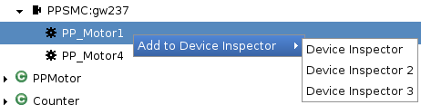
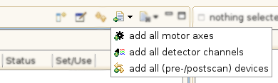

This feature is available in both perspectives (EveDevice and EveEngine). There are three different ways to accomplish this task.
The first method to add a device is per double click. In the (Local) Devices View navigate through the tree to the device of choice and double click it. If it isn’t already present it will be added to the currently active Device Inspector View.
You can also add multiple devices by double clicking on a motor/detector or class.
The second method has the advantage that you can add the device to any open Device Inspector (not just the active one). To do that navigate through the tree in the (Local) Devices View to the device of choice and right click on it to open a context menu. Move the mouse arrow to the entry „Add to Device Inspector”. A list appears showing all open Device Inspector Views. Choose the one where you want the device to be added and click on it. If it isn’t already present it will be added to the Device Inspector View you have chosen.

You can also add multiple devices by opening the context menu on a motor/detector or class.
The third method perhaps is the most intuitive. Navigate to the device of choice and click (and hold) on it. Drag it to the appropriate table* (axis to the axes table, channel to the channels table, device to the devices table) and release the mouse button. If the device isn’t already present it will be added to the table.
To add all axes of a motor (or all channels of a detector) use the motor (detector) as the drag source instead.
To add all devices of a certain kind (e.g. all available motors) use the command available in the toolbar (top right corner of the view).

However since most test sites contain a large number of devices this feature should be used with caution. Please note that each added device is a group of process variables which are monitored producing processor load and network traffic.
* You can also identify the type of device by its icon .